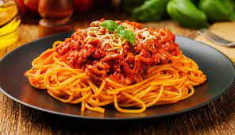
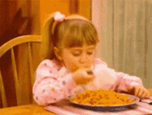

Web livro de receitas
Macarronada

Ingredientes:
carne moída a gosto
1 lata de milho verde
1 lata de creme de leite
macarrão refogado na manteiga a gosto
1 lata de ervilha
1 lata de molho de tomate
Modo de preparo (30 min):
- Em uma panela, leve a carne moída temperada ao fogo e adicione o milho verde e a ervilha..
- Misture tudo e deixe cozinhar por 30 minutos.
- Desligue o fogo e acrescente o creme de leite e o molho de tomate.
- Incorpore o macarrão refogado na manteiga e misture bem.

Sirva-se
Serve até 8 pessoas
Proxima pagina